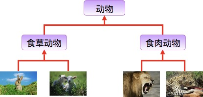
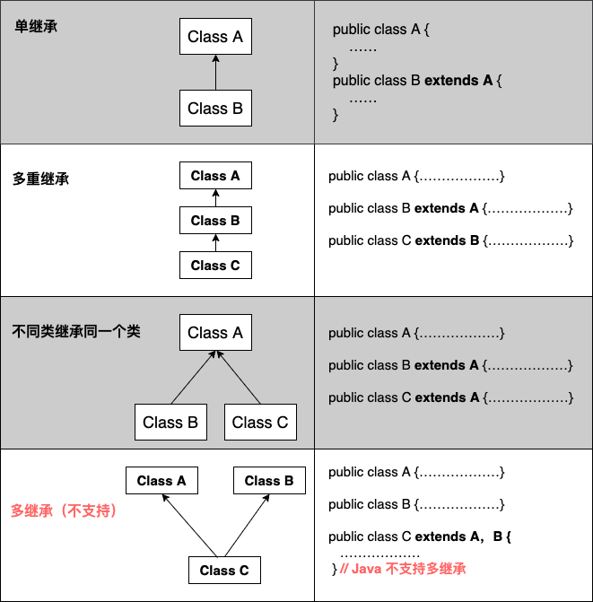

Java 継承
継承の概念
継承は Java のオブジェクト指向プログラミング技術の基盤です。階層的なクラスを作成できるからです。
継承とは、サブクラスが親クラスの特徴と動作を継承し、サブクラスのオブジェクト（インスタンス）が親クラスのインスタンスフィールドとメソッドを持つこと、またはサブクラスが親クラスからメソッドを継承して、サブクラスが親クラスと同じ動作を持つことを指します。
生活の中の継承：

ウサギとヒツジは草食動物類に属し、ライオンとヒョウは肉食動物類に属します。
草食動物と肉食動物は、さらに動物類に属します。
したがって、継承が満たすべき関係は is-a です。親クラスはより一般的で、サブクラスはより具体的です。
草食動物と肉食動物はどちらも動物に属しますが、両者の属性や行動には違いがあります。そのため、サブクラスは親クラスの一般的な特性を持ちつつ、自身の特性も持ちます。
クラスの継承形式
Java では、extends キーワードを使用して、あるクラスが別のクラスから継承されていることを宣言できます。一般的な形式は次のとおりです：
クラスの継承形式
なぜ継承が必要か
次に、例を通してこの要件を説明します。
動物クラスを開発します。動物はそれぞれペンギンとネズミです。要件は次のとおりです：
- ペンギン：属性（名前、id）、メソッド（食べる、寝る、自己紹介）
- ネズミ：属性（名前、id）、メソッド（食べる、寝る、自己紹介）
ペンギンクラス：
ネズミクラス：
この2つのコードから分かるように、コードに重複があり、コード量が多くて冗長で、保守性も高くありません（主に、後で修正が必要な場合に多くのコードを修正する必要があり、エラーが発生しやすいという形で現れます）。この2つのコードの問題を根本的に解決するには継承が必要です。2つのコード内の重複部分を抽出して1つの親クラスを作成します：
共通親クラス：
この Animal クラスは親クラスとして使用できます。ペンギンクラスとネズミクラスがこのクラスを継承すると、親クラスの属性とメソッドを持つことになり、サブクラスに重複したコードは存在せず、保守性も向上し、コードもより簡潔になり、コードの再利用性が高まります（再利用性とは、何度も使用でき、同じコードを何度も書く必要がないことです） 継承後のコード：
ペンギンクラス：
ネズミクラス：
継承の種類
注意すべき点は、Java は多重継承（複数のクラスを継承すること）をサポートしていませんが、多段継承はサポートしています。

継承の特性
サブクラスは親クラスの private 以外の属性とメソッドを保持します。
サブクラスは自身の属性とメソッドを持つことができます。つまり、サブクラスは親クラスを拡張できます。
サブクラスは独自の方法で親クラスのメソッドを実装できます。
Java の継承は単一継承ですが、多段継承が可能です。単一継承とは、1つのサブクラスが1つの親クラスしか継承できないことです。多段継承とは、例えば B クラスが A クラスを継承し、C クラスが B クラスを継承する場合、B クラスは C クラスの親クラスであり、A クラスは B クラスの親クラスである、という関係になります。これは Java の継承が C++ の継承と異なる点です。
クラス間の結合度を高めます（継承の欠点です。結合度が高いとコード間の関連が強くなり、コードの独立性が低くなります）。
継承キーワード
すべてのクラスは java.lang.Object を継承します。クラスが2つの継承キーワードを使用しない場合、デフォルトで Object（このクラスはjava.langパッケージ内にあるため、import は不要ですimport）という祖先クラスを継承します。
extendsキーワード
Java では、クラスの継承は単一継承です。つまり、1つのサブクラスは1つの親クラスしか持てないため、extends は1つのクラスしか継承できません。
extends キーワード
implementsキーワード
implements キーワードを使用すると、Java に間接的に多重継承の特性を持たせることができます。使用範囲はクラスがインターフェースを継承する場合で、複数のインターフェースを同時に継承できます（インターフェース間はカンマで区切ります）。
implements キーワード
super と this キーワード
super キーワード：super キーワードを使用して親クラスのメンバーにアクセスし、現在のオブジェクトの親クラスを参照できます。
this キーワード：自分自身を指す参照です。現在のオブジェクト、つまりそのメソッドまたはコンストラクタが属するオブジェクトインスタンスを参照します。
例
出力結果は：
animal : eat dog : eat animal : eat
final キーワード
final は変数（クラス属性、オブジェクト属性、ローカル変数、仮引数を含む）、メソッド（クラスメソッドとオブジェクトメソッドを含む）、およびクラスを修飾するために使用できます。
final は「最終的な」という意味です。
final キーワードを使用してクラスを宣言すると、そのクラスは最終クラスとして定義され、継承できなくなります。また、メソッドを修飾する場合は、そのメソッドはサブクラスでオーバーライドできません：
クラスの宣言：
final class 类名 {//类体}-
メソッドの宣言：
修饰符(public/private/default/protected) final 返回值类型 方法名(){//方法体}
注記：final で定義されたクラスでも、その属性やメソッドは final ではありません。
コンストラクタ
サブクラスは親クラスのコンストラクタ（コンストラクタメソッド、またはコンストラクタ関数）を継承しません。単に呼び出すだけです（暗黙的または明示的に）。親クラスのコンストラクタにパラメータがある場合、サブクラスのコンストラクタで明示的にsuperキーワードを使用して親クラスのコンストラクタを適切なパラメータリストとともに呼び出す必要があります。
親クラスのコンストラクタにパラメータがない場合、サブクラスのコンストラクタでsuperキーワードを使用して親クラスのコンストラクタを呼び出す必要はなく、システムが自動的に親クラスの引数なしコンストラクタを呼び出します。
例
出力結果は：
------SubClass 类继承------ SuperClass() SubClass() SuperClass(int n) SubClass(int n): 100 ------SubClass2 类继承------ SuperClass(int n) SubClass2() SuperClass() SubClass2(int n): 200その他の拡張
tianqixin
429***967@qq.com
参考URL
Java でサブクラスから親クラスのメソッドを呼び出す場合、キーワード super を使用する必要があります。
例
class Animal{ void go(){ System.out.println("animal go"); } } class Dog extends Animal{ void go(){ //调用父类方法 super.go(); } } //驱动函数 public static void main(String[] args){ Dog dog=new Dog(); dog.go(); }出力結果：
tianqixin
429***967@qq.com
参考URL
私は初心者です
824***448@qq.com
オブジェクト指向プログラミング——継承とポリモーフィズム
//---授業の先生の講義ノートからの引用（詹先生）
1、なぜ継承を使用するのか
既存のクラスから新しいクラスを派生させることを継承と呼びます。
異なるクラスにも共通の特徴や動作がある場合があります。それらの共通の特徴や動作を1つのクラスにまとめ、他のクラスに共有させることができます。
したがって、汎用クラスを定義し、それを他の複数の特定クラスに拡張できます。これらの特定クラスは汎用クラスの特徴と動作を継承します。
継承はJavaにおいてソフトウェア再利用を実現する重要な手段であり、重複を避け、保守が容易で、理解しやすいものです。
2、親クラスと子クラス
クラスBがクラスAから派生する場合、つまりクラスBがクラスAを拡張する場合、またはクラスBがクラスAを継承する場合、クラスAを「親クラス」と呼び、スーパークラス、基本クラスとも呼びます。クラスBを「子クラス」と呼び、サブクラス、拡張クラス、派生クラスとも呼びます。
子クラスは親クラスからアクセス可能なデータフィールドとメソッドを継承し、新しいデータフィールドと新しいメソッドを追加することもできます。
継承を定義する構文：
例：Shapeクラスは親クラスであり、その子クラスにはCircleクラス、Rectangleクラス、Triangleクラスなどがあります。
継承の注意点：
ただし、すべての「is-a」関係が継承を使うべきとは限りません。例えば、正方形は矩形の一種ですが、SquareクラスにRectangleクラスを継承させるべきではありません。正方形は矩形から何も拡張できないからです。正しい継承関係は、SquareクラスがShapeクラスを継承することです。
3、superキーワード
superは、それを使用するクラスの親クラスを表します。superは以下に使用できます：
親クラスのコンストラクタを呼び出す構文：
注意：super文は子クラスのコンストラクタの最初の文でなければなりません。子クラス内で親クラスのコンストラクタ名を使用して親クラスのコンストラクタを呼び出すことはできません。親クラスのコンストラクタは子クラスに継承されません。親クラスのコンストラクタを呼び出す唯一の方法はsuperキーワードを使用することです。子クラス内で明示的に呼び出さない場合、コンパイラは自動的にsuper(); を子クラスのコンストラクタの最初の文として追加します。これによりコンストラクタチェーンが形成されます。
静的メソッド内ではsuperキーワードを使用できません。
親クラスのメソッドを呼び出す構文：
継承したメソッドの場合は、superを使用して呼び出す必要はなく、直接呼び出すことができます。ただし、子クラスが親クラスのメソッドをオーバーライドまたは書き換えた場合は、superを使用してのみ、子クラス内で親クラスのオーバーライドされたメソッドを呼び出すことができます。
4、thisキーワード
thisキーワードは現在のオブジェクトを表します。以下に使用できます：我是小菜鸟
824***448@qq.com
Mr.先生
yu5***26@163.com
finalの働きは、修飾する型によって異なります。
1、finalがクラス内の属性または変数を修飾する場合
属性が基本型であっても参照型であっても、finalの働きは、変数に格納されている「値」を変更できないようにすることです。
この値は、基本型の場合、変数には実際の値（1、"abc"など）が格納されます。
一方、参照型の変数にはアドレスが格納されるため、finalで参照型の変数を修飾する場合は、その中のアドレスを変更できないという意味であり、そのアドレスが指すオブジェクトや配列の内容を変更できないという意味ではありません。ここに注意が必要です。
例：クラスに次のような属性がある場合、final Person p=new Person("name");その場合、pに再代入することはできませんが、pが指すオブジェクトの中の属性値を変更することはできます。p.setName('newName');
finalが属性を修飾する場合、変数の宣言時に値を代入しなくても構いませんが、一度代入すると変更できなくなります。final属性には3つの場所で値を代入できます：宣言時、初期化ブロック内、コンストラクタ内です。いずれにしても必ず代入しなければなりません。
2、finalがクラス内のメソッドを修飾する場合
働き：継承はできますが、継承後にオーバーライド（書き換え）することはできません。
3、finalがクラスを修飾する場合
働き：クラスは継承できません。
Mr.先生
yu5***26@163.com
WaterHole
710***626@qq.com
Javaファイルがclassファイルにコンパイルされるとき、子クラスのすべてのコンストラクタの最初の行（最初の文）に、デフォルトでsuper()文が自動的に追加されます。子クラスのコンストラクタを実行する前に、常に親クラスのコンストラクタが先に実行されます。
コードを書く際の注意点：
継承関係において、関数（メソッド）またはクラスのメンバ変数を呼び出すとき、JVM（Java仮想マシン）はまず現在のクラス（つまり子クラス）にその関数またはメンバ変数が含まれているかどうかを調べ、含まれていれば子クラスのものを実行し、含まれていなければ親クラスのものを実行します。以下の通りです：
public class Start { public static void main(String[] args) { Cat cat=new Cat("Jack","黑色"); cat.eat(); cat.run(); cat.sleep(); } } class Animal { String name; public Animal(){}//必须要写这个构造函数，不然Cat类的代码会出错 public Animal(String name) { this.name=name; } void eat() { System.out.println(name+"正在吃"); } void run() { System.out.println(name+"正在奔跑"); } void sleep() { System.out.println(name+"正在睡觉"); } } class Cat extends Animal { String color; public Cat(String name,String color) { this.name=name; this.color=color; } void eat() { System.out.println(color+"的"+name+"正在吃鱼"); } }実行結果は以下の通りです：
子クラスに親クラスと同じ関数が現れた場合、これは次のように呼ばれます：オーバーライド（書き換え）とも呼ばれます：上書き
Objectクラスはすべてのクラスの直接の親クラスまたは間接の親クラスであり、つまりすべてのクラスのルート親クラスです。これはパラメータの受け渡しに応用できます。
以下の通り：
public class Start { public static void main(String[] args) { A a=new A(); B b=new B(); C c=new C(); D d=new D(); speak(a); speak(b); speak(c); speak(d); } // instanceof 关键字是用于比较类与类是否相同，相同返回true，不同返回false //当你不清楚你需要的参数是什么类型的，可以用Object来代替，Object可以代替任何类 static void speak(Object obj) { if(obj instanceof A)//意思是：如果参数是 A 类，那么就执行一下语句 { A aobj=(A)obj;//这里是向下转换，需要强制转换 aobj.axx(); } else if(obj instanceof B) { B bobj=(B)obj; bobj.bxx(); } else if(obj instanceof C) { C cobj=(C)obj; cobj.cxx(); } } } //这里举了四个类，他们的函数都不同，但都是 Object 类的子类 class A { void axx() { System.out.println("Good morning!"); System.out.println("This is A"); } } class B { void bxx() { System.out.println("Holle!"); System.out.println("This is B"); } } class C { void cxx() { System.out.println("Look!"); System.out.println("This is C"); } } class D { void dxx() { System.out.println("Oh!Bad!"); System.out.println("This is D"); } }実行結果：
WaterHole
710***626@qq.com
wyk123
101***6246@qq.com
例：
class Base { public Base() { System.out.println("Base--默认构造方法"); } public Base(int c){ System.out.println("Base--有参构造方法--" + c); } } public class Derived extends Base { public Derived() { // super(); //系统会自动隐式先调用父类的无参构造函数 super(); //必须是第一行，否则不能编译 System.out.println("Derived--默认构造方法"); } public Derived(int c) { // super(); //系统会自动隐式先调用父类的无参构造函数 super(); //必须是第一行，否则不能编译 System.out.println("Derived--有参构造方法" + c); } public Derived(int a, int b) { super(a); //如果子类构造方法第一行显式调用了父类构造方法，系统就不再调用无参的super()了。 System.out.println("Derived--有参构造方法--" + b); } public static void main(String[] args) { System.out.println("============子类无参============"); Derived no = new Derived(); System.out.println("============子类有参============"); Derived have = new Derived(33); System.out.println("============子类有参============"); Derived have2 = new Derived(33, 55); } }実行結果は以下の通りです：
注意：親クラスに引数なしコンストラクタがない場合、子クラスを作成するときにコンパイルできません。ただし、コンストラクタのコード本体の最初の行で親クラスの引数付きコンストラクタを明示的に呼び出す場合を除きます。
wyk123
101***6246@qq.com
芳小酱
fan***u.ling@foxmail.com
子クラスは親クラス内のprivate属性とメソッドを直接継承できません。
/**建立一个公共动物父类*/ public class Animal { private String name; private int id; /*由于name和id都是私有的，所以子类不能直接继承， 需要通过有参构造函数进行继承*/ public Animal(String myname,int myid) { name = myname; id = myid; } public void eat() { System.out.println(name+"正在吃"); } public void sleep() { System.out.println(name+"正在睡"); } public void introduction() { System.out.println("大家好！我是" +id+"号"+name +"."); } }子クラスPenguinキーワードを介して行う必要がありますsuper宣言を行います
public class Penguin extends Animal { public Penguin(String myname,int myid) { super(myname,myid); // 声明继承父类中的两个属性 } }具体的には、引数付きコンストラクタを通じて継承します。
public class PenguinQQ { public static void main(String[] args) { // TODO Auto-generated method stub Penguin QQ = new Penguin("小冰",10086); //调用一个有参构造方法 QQ.eat(); QQ.sleep(); QQ.introduction(); } }実行結果：
芳小酱
fan***u.ling@foxmail.com
nanjidifang
322***1300@qq.com
Javaの型変換の問題は実際には複雑ではありません。一言だけ覚えておいてください：親クラスの参照は子クラスのオブジェクトを指すということです。
親クラスの参照が子クラスのオブジェクトを指すとはどういうことか、ゆっくり説明します。
2つの用語から説明を始めます：：アップキャスティング（upcasting） 、ダウンキャスティング（downcasting）。
例を挙げます：2つのクラスがあり、Fatherは親クラス、SonクラスはFatherを継承しています。
2番目の例：
最初の例で、Son s1 = (Son)f1; がなぜ正しいのか疑問に思うかもしれません。
とても簡単です。f1が子クラスのオブジェクトを指しているからです。Father f1 = new Son();子クラスの参照s1は当然、子クラスのオブジェクトを指すことができます。
一方、f2はFatherオブジェクトを指しているため、Father f2 = new Father();子クラスの参照s1は親クラスのオブジェクトを指すことはできません。
まとめ：
1、親クラスの参照は子クラスのオブジェクトを指すことができますが、子クラスの参照は親クラスのオブジェクトを指すことはできません。
2、子クラスのオブジェクトを直接親クラスの参照に代入することをアップキャスティング（upcasting）と呼びます。アップキャスティングは強制型変換を必要としません。例：
3、子クラスのオブジェクトを指す親クラスの参照を子クラスの参照に代入することをダウンキャスティング（downcasting）と呼び、強制型変換が必要です。例：
f1は、子クラスのオブジェクトを指す親クラスの参照です。f1を子クラスの参照s1に代入する場合、すなわちSon s1 = (Son)f1;
その際、f1の前の(Son)を必ず付け、強制型変換を行います。
nanjidifang
322***1300@qq.com
ToToXie
wdt***@163.com
参考URL
継承を理解する上で最も重要なことは、何が継承されるのか、つまり子クラスが親クラスから何を得るのかを知ることです。答えは：すべてのもの、つまり親クラスのすべてのメンバ（変数とメソッドを含む）は、コンストラクタを除いて、子クラスのメンバになります。コンストラクタは親クラスだけに存在するものです。なぜなら、コンストラクタの名前はクラスの名前と同じだからです。したがって、親クラスのコンストラクタは子クラスには存在しません。それ以外は、子クラスは親クラスのすべてのメンバを継承します。
しかし、取得できることは自由に使用できることを意味しない。各メンバーには異なるアクセス属性があり、サブクラスは親クラスのすべてのメンバーを継承するが、異なるアクセス属性によりサブクラスがこれらのメンバーを使用する際に違いが生じる。一部の親クラスのメンバーは直接サブクラスの外部インターフェースとなり、一部は深く隠蔽され、サブクラス自身でさえ直接アクセスできない。以下の表は、異なるアクセス属性を持つ親クラスのメンバーがサブクラスにおいて持つアクセス属性を示す。
public のメンバーは直接サブクラスの public メンバーとなり、protected のメンバーも直接サブクラスの protected メンバーとなる。Java の protected はパッケージ内およびサブクラスからアクセス可能という意味なので、デフォルトのアクセス属性より広い。一方、親クラスのデフォルト（アクセス属性未定義）のメンバーは、親クラスの属するパッケージ内でのみ可視である。サブクラスが親クラスのパッケージに属さない場合、サブクラス内ではこれらのデフォルト属性のメンバーは private メンバーと同じで、不可視である。親クラスの private メンバーはサブクラス内にも依然として存在するが、サブクラスから直接アクセスすることはできない。継承されたメンバーのアクセス属性をサブクラス内で再定義することはできない。親クラスに既に存在するメンバー変数を再定義しようとする場合、それは親クラスのメンバー変数とは完全に無関係な変数を定義することになる。サブクラス内ではサブクラスに定義されたこの変数にアクセスでき、親クラスのメソッド内では親クラスの変数にアクセスする。同名であっても互いに影響しない。
サブクラスのオブジェクトを構築する際、親クラスのコンストラクタも呼び出され、親クラスのコンストラクタはサブクラスのコンストラクタより先に呼び出される。プログラムの実行中、サブクラスオブジェクトの領域の一部には親クラスのオブジェクトが格納される。サブクラスは親クラスから継承するため、サブクラスオブジェクトの初期化処理で親クラスのメンバーを使用する可能性がある。そのため、親クラスの領域がまず初期化され、その後でサブクラスの領域が初期化される必要がある。この過程で、親クラスのコンストラクタが引数を必要とする場合、どのように引数を渡すかが重要になる。
ToToXie
wdt***@163.com
参考アドレス
战神阿伦第一
116***6050@qq.com
コンストラクタの下のインスタンス、初心者が困惑しやすい箇所：
出力結果は：
まずプログラムを一通り読み、メインクラス配下の main 関数から始める。サブクラスに対してそれぞれ2つのオブジェクトをインスタンス化しており、sc オブジェクトには値を代入せず、sc2 には 200 を代入している。
次にプログラムを上から下まで一通り読む。SuperClass 親クラスにはメンバー変数が1つと、コンストラクタが2つ（引数なし1つ、引数あり1つ）ある。続いて SubClass サブクラスがあり、サブクラスは親クラスを継承し、メンバー変数が1つある。ただし注意すべき点として、親クラスのメンバー変数は private であるため、サブクラスの private メンバー変数は親クラスから継承されたものではなく、書き直されたものである。コンストラクタは2つ（引数なし1つ、引数あり1つ）ある。
this と super の理解：this は現在のオブジェクト配下のものを参照し、super は現在のオブジェクトの親クラスを参照する。
战神阿伦第一
116***6050@qq.com
FS
429***f0967@qq.com
FS
429***f0967@qq.com
Geyj
181***6857@qq.com
参考アドレス
メンバー内部クラスの継承について。一般的に、内部クラスが継承に使われることはほとんどない。しかし継承に使う場合は、2点注意する必要がある：
class WithInner { class Inner{ } } class InheritInner extends WithInner.Inner { // InheritInner() 是不能通过编译的，一定要加上形参 InheritInner(WithInner wi) { wi.super(); //必须有这句调用 } public static void main(String[] args) { WithInner wi = new WithInner(); InheritInner obj = new InheritInner(wi); } }Geyj
181***6857@qq.com
参考アドレス